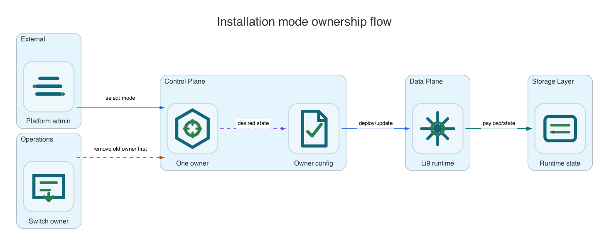

Reference / Platform
Installation modes and lifecycle ownership.
Li9 S3 has one runtime and one S3 API surface, but four supported lifecycle owners: OpenShift Operator, Helm, Linux packages, and Windows packages. Choose exactly one owner for a deployment target.
This page is global on purpose. It explains how installation modes differ. Platform-specific details live in the OpenShift, Helm, Linux, and Windows reference pages.
Supported Modes

| Mode | Lifecycle owner | Configuration surface | Use when | Reference |
|---|---|---|---|---|
| OpenShift Operator | OLM and Li9 S3 operator | CRDs such as S3Storage, S3Bucket, S3BucketAccess, lifecycle, policy, archive, replication, observability, and documentation CRs. |
OpenShift is the target platform and bucket consumption is Kubernetes-native. | OpenShift reference |
| Helm / Kubernetes | Helm release | values.yaml, rendered Deployments, StatefulSets, Services, PVCs, Secrets, ServiceMonitors, and PrometheusRules. |
Kubernetes is available, but OLM/operator lifecycle is not desired or not available. | Helm reference |
| Linux Packages | RPM/DEB package manager and systemd | Host configuration files, systemd units, mounted disks, firewall rules, TLS files, and package repository state. | The runtime must run directly on Linux VMs or bare metal without Kubernetes owning services. | Linux reference |
| Windows Packages | MSI/ZIP installer and Windows Service Control Manager | Host configuration files, Windows services, persistent volumes, firewall rules, TLS files, and package artifacts. | The runtime must run directly on Windows VMs or hosts without Kubernetes owning services. | Windows reference |
What Stays The Same
| Area | Same across all modes | Where to read more |
|---|---|---|
| S3 client behavior | AWS CLI and SDK clients use endpoint override, region, access key, secret key, and S3-compatible APIs. | S3 API reference |
| Runtime services | Gateway, identity, policy, metadata, object, storage-node, KMS, audit, and healing services have the same responsibilities. | Runtime services |
| Data protection | Replication, erasure coding, metadata durability, write commit behavior, and degraded-mode expectations are product runtime behavior. | Data protection |
| Observability | Metrics, audit delivery, request latency, storage-node errors, metadata quorum, KMS, healing, and replication signals are runtime signals. | Observability |
What Changes By Mode
| Concern | OpenShift Operator | Helm | Linux | Windows |
|---|---|---|---|---|
| Install action | Create OLM objects and S3Storage. | Run helm upgrade --install. | Install RPM/DEB packages. | Install MSI or unpack ZIP. |
| Upgrade action | Advance operator subscription/channel and reconcile CRs. | Upgrade chart release and values. | Upgrade packages node by node. | Upgrade MSI/ZIP node by node. |
| Configuration source | CR specs and operator defaults. | Chart values and rendered manifests. | /etc/li9-s3 files. | C:\ProgramData\Li9\S3 files. |
| Service manager | Kubernetes controllers. | Kubernetes controllers. | systemd. | Windows Service Control Manager. |
| Storage attachment | PVCs and StorageClasses. | PVCs and StorageClasses. | Mounted Linux disks/directories. | Mounted Windows volumes/directories. |
| Bucket self-service | Li9 CRDs, OBC/COSI where enabled, generated Kubernetes Secrets. | Runtime control API or S3 API, no Li9 CRDs. | Runtime control API or S3 API, no Kubernetes CRDs. | Runtime control API or S3 API, no Kubernetes CRDs. |
Selection Rules
OCP
Choose OpenShift Operator
Use it when OpenShift is the production platform, OLM is available, and application teams should request buckets through Kubernetes APIs.
HELM
Choose Helm
Use it when Kubernetes owns workloads, but the deployment is chart-driven without operator CRDs.
LIN
Choose Linux packages
Use it when hosts or VMs are the operational unit and systemd should own Li9 S3 services.
WIN
Choose Windows packages
Use it when Windows hosts or VMs are the operational unit and Windows services should own Li9 S3 services.
Do Not Mix Control Planes
| Conflict | Why it is unsafe | Correct action |
|---|---|---|
| Operator and Helm in the same namespace | Both can try to own the same Deployments, StatefulSets, Services, PVCs, Secrets, and monitoring resources. | Uninstall one mode before installing the other. |
| Host packages and Kubernetes-managed runtime on the same data paths | Two service managers can write to the same metadata, WAL, or object data paths. | Use separate hosts, namespaces, volumes, and endpoints. |
| Manual edits to generated resources | The lifecycle owner can overwrite changes or leave drift that is hard to diagnose. | Change CR specs, Helm values, or host config files instead. |
Verification Entry Points
| Mode | Health check | S3 client check |
|---|---|---|
| OpenShift Operator | oc get subscription,csv, oc get s3storage, pod/PVC/Service readiness. | Use generated S3BucketAccess Secret with AWS CLI endpoint override. |
| Helm | helm status, rendered Kubernetes resources, pod/PVC/Service readiness. | Use chart-provisioned credentials or runtime control API credentials with AWS CLI endpoint override. |
| Linux | systemctl status li9-s3-storage.target and li9-s3ctl health. | Use issued credentials and the Linux load balancer or host endpoint. |
| Windows | Get-Service Li9S3* and li9-s3ctl.exe health. | Use issued credentials and the Windows load balancer or host endpoint. |